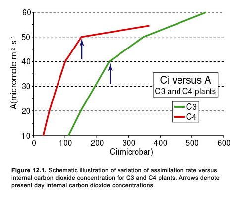
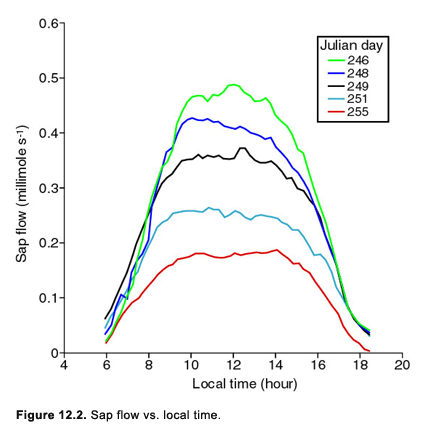

Home
Home

Plants survive by taking in carbon dioxide and converting the carbon to its own substance (assimilation). The net carbon gain manifests itself as an increase in the biomass, which consists of roots, stem, leaves, flowers, etc. Carbon dioxide (CO2) enters the plants through the stomates, and so, the rate of biomass increase is closely dependent on the stomatal resistance. Not surprisingly therefore, the economic value of a crop is closely tied to the level of transpiration, which also depends on the stomatal resistance. Since transpiration is not beneficial to the plant except to reduce the leaf temperature1, we might expect plants to favor a maximization of carbon dioxide intake in relation to transpiration. Thus, plants benefit most by keeping the stomates open, regardless of the transpiration, as long as sufficient water reserves are available to the roots. By now you realize from the simulations that decreasing soil water content does not necessarily reduce transpiration until the plant perceives itself to be in danger of water stress, although the stress signal does not depend uniquely on soil water content.
In these days of the runaway greenhouse effect scare, some researchers take heart that an increase in carbon dioxide concentration in the atmosphere will lead to an enhanced carbon dioxide uptake by the plants and so, to an increased biomass production. Experiments done in the greenhouse and in the field suggest that an increase in carbon dioxide concentration also causes the stomatal resistance to increase, with the net effect being a gain in biomass and a decrease in transpiration, thus doubly benefiting the plant. At first glance, this dual effect of increasing assimilation and reducing water use would seem to be beneficial. We can use our simulation model to explore this finding.
Our main purpose here, however, is simply to examine the flux of carbon dioxide in a canopy (specifically the carbon dioxide assimilation rate A). We can also test the idea that an increase in stomatal resistance associated with an increase in ambient carbon dioxide concentration leads to both an increase in the carbon dioxide assimilation rate and possibly to a decrease in transpiration.
1 Water transport from root to leaf is nevertheless critical in bringing nutrients and hormones to the plant factory. Transpiration is also necessary to maintain a reasonable leaf temperature. Although photochemical processes tend to be more efficient at higher temperatures, very high temperatures, however, will not only force the plant to lose more water through the leaves but will tend to destroy cellular function.
Let us return to the idea that a flux of a substance moves down a gradient of potential and across a resistance, the Ohm's law analog for diffusive fluxes. The source of carbon dioxide is in the atmosphere, let us say above the plant canopy, where the concentration of carbon dioxide gas (Ca) has a mean value of about 350 parts per million (of CO2) by volume of air (ppmv), which is numerically equivalent to 350 microbars or to 350 mol (CO2) mol-1 (air) times 10-6 . We will refer to this ambient carbon dioxide concentration above the canopy as (Ca). If the drop in carbon dioxide potential is C and the resistance across that potential drop is r, the flux of carbon dioxide (FCO2) is given by Eqn. 12.1.
If the plant is to ingest carbon molecules there must be a diffusive flux of CO2 downward through the surface layer along decreasing concentration to the leaf surface (see Figure 8.1). The appropriate resistances are: 1) The turbulent resistance in the surface layer, which we will call rCO2, 2) Once inside the canopy the molecules move through the interleaf airspaces and across the surface boundary layer of the leaf, where the resistance is rahc, and 3) Ignoring the flux of carbon dioxide across the cuticular part of the leaf surface, the carbon dioxide molecules then penetrate into the leaf via the stomates where they encounter an internal (or intercellular) carbon dioxide concentration Ci, and the stomatal resistance to carbon dioxide flux of rsc Ci is representative of the concentration of carbon dioxide in the mesophyll waiting to be photosynthesized - a sort of waiting room for carbon atoms in line to be processed. Accordingly, we can write a somewhat more elaborate version of Eqn. 12.1 in the form of Eqn. 12.2 (note that the density of carbon dioxide gas (kg m-3 of CO2) is necessary to make the units agree with the left hand side of the equation which has the units of kg (CO2) m-2 s-1)). This formulation results in what is known as the CO2 assimilation rate, A.
Resistances for carbon dioxide flux are generally somewhat larger than those of water vapor because the molecular diffusivity of carbon dioxide in air is less than that of water vapor in air (possibly because the former is somewhat heavier (molecular weight 44) than water vapor (molecular weight 18)). However, the differences in resistances between carbon dioxide and water vapor in air are generally less than a factor of two (depending on what resistance one is talking about). Accordingly, let us agree for the sake of argument (since it alters no fundamental result) that the two sets of resistances, that for water vapor and that for carbon dioxide, are equal.
Imagine a flux of water vapor from the stomates into the surrounding interleaf airspaces, as in Eqn. 7.3, and thence into the surface layer above the canopy through resistance rv . Ignoring the parallel water vapor flux from the ground below the canopy, the flux of water vapor between the leaf and the atmospheric surface layer (in kg m-2 s-1) is given by Eqn. 12.3. Note that ea here refers to the vapor pressure above the canopy, i.e. at some elevation where the carbon dioxide concentration is not immediately affected by transient perturbations in the canopy fluxes.
Now, if we equate the water vapor and carbon dioxide resistances, and take a ratio of the two fluxes (dividing Eqn. 12.2 by Eqn. 12.3 to yield Eqn. 12.4), we obtain a measure of the water use efficiency (WUE), which is the essentially the ratio of the carbon dioxide concentration gradient between the atmosphere above the plant canopy and that in the substomatal cavities to the gradient in vapor pressure between the inside of the leaf and that in the surface layer above the canopy. Note, however, that because of the 30-fold smaller concentration of carbon dioxide than water vapor in the atmosphere, the magnitude of the water fluxes will be much larger than those for CO2. A typical value for the flux of carbon dioxide from air to plant (FCO2) at noon on a sunny summer day is 1 x10-6 kg m-2 s-1, or 20 micro moles per square meter per second.
The substomatal concentration Ci is known to be approximately constant under normal atmospheric and plant conditions. It is about 220 ppmv for C3 plants, such as wheat, rice and potatoes, and 120 ppmv for C4 plants, such as corn and sorghum. Ci can vary slightly with ambient conditions. We will have more to say about this intriguing parameter later in these notes. (The physiological differences between C3and C4 plants is beyond the scope of this course, except to mention that the latter represents plants that have evolved to have four carbon pathways rather than three pathways in the photosynthesis process as in ΔC3 plants.)
Eqn 12.4. shows us that the primary control of water use efficiency is exerted by the vapor pressure deficit between that at the leaf surface and that above the canopy. Assuming that the latter is largely controlled by the atmosphere, the single most important variable in the WUE relationship is the vapor pressure in the leaf, which is to say that control rests with the leaf temperature. We might imagine that the plant is trying to maximize the WUE, but, at the same time, maximize its rate of carbon intake. Blum (1989) cites a formula relating plant yield (YE) to WUE, more specifically the product of WUE times the evapotrananspiration. He also cites another formula relating biomass creation to the ratio of transpiration to potential evapotranspiration, which is a little bit like our parameter M, the moisture availability.
Well beyond the scope of this course is the frightening terrain of pure plant physiology. Nevertheless, plant physiologists are also struggling with the modeling aspects of assimilation rates. One of the most well known of the current assimilation models is one constructed by Farquhar (1989); of feedforward fame. The Farquhar model, which deals primarily with C3 plants, attempts to describe curve shown in Figure 12.1, which emerges from numerous experiments in which Ci is varied as a function of assimilation rate. We see that A increases first rapidly and almost linearly with increasing Ci and then much more slowly beyond a bend in the curve which is actually not far from the characteristic present-day values of Ci for the plant. Assumed in this figure is that Ca is also increased proportionally with Ci. Typically, C3 plants tend to have a more gradual transition from rapidly increasing assimilation rate to slowly increasing assimilation rate than C4 plants, as shown in Figure 12.1. The bend in the two curves occurs close to the present-day normal values for internal carbon dioxide concentrations.

The bend also represents a transition between two physiological states of the plant, one in which the photosynthesis is limited by the availability of an organic compound called Rubisco, which is involved in the reduction and oxidation in the C3 pathway (low Ci), and the other in which photosynthesis is limited by the availability of photon flux (high Ci). Clearly, an increase in internal carbon dioxide concentration causes the assimilation rate to increase, although at a rapidly decreasing rate with increasing concentration. We will later touch on the importance of this decrease in assimilation rate with increasing carbon dioxide concentration.
Laboratory measurements show that an increase in carbon dioxide concentration at the surface of the leaf induces an increase in stomatal resistance. A glance at Figure 12.1 agrees with this in that the assimilation rate does not increase rapidly with an increase in internal carbon dioxide concentration beyond present-day concentrations. Experiments further show that while fluctuations in stomatal resistance and other local factors do not significantly affect internal carbon dioxide concentration, an increase in ambient carbon dioxide concentration moves the entire curves for both C3 and C4 plants, shown in Figure 12.1, toward the right. Despite this shift, the net effect of increasing Ci is one of an increase in assimilation rate even for C4 plants (although the sharper transition at the bend in the curves followed by a nearly constant value of assimilation rate of the C4 curve above the bend translates to a smaller gain in A for C4 plants than for C3 plants with an increase in Ca or Ci.

Worst-case scenarios (not one of ours) suggests a near doubling of ambient carbon dioxide concentration by the middle of the next century, from the present 350 ppmv to about 660 ppmv, as the result of continue fossil fuel burning. This increase already comes on top of an increase from 280 ppmv from the middle of the last century to about 330 ppmv a couple decades ago. A first guess based on Eqn. 12.2 is that the doubling in Ca would cause the assimilation rate A to increase by a factor of about 4 for C3 plants and about 2.5 for C4 plants (assuming no change in the values for Ci). In fact, Cure and Acock (1986) examined all the published measurements they could find that were related to the response of plants to an increase of carbon dioxide. Their results show that the increase in assimilation rate is likely to be only about 40% for C3 plants and about 25% for C4 plants. Moreover, they show that plants grown under ambient concentrations of 660 ppmv, or allowed to come into equilibrium with their new enriched CO2 environment, show an even lower increase in assimilation rate, about 30% for C3 plants and less than 10% for C4 plants. These increases in assimilation rates translate into increases in biomass production.
A further implication of Cure and Acock's (1986) data is that transpiration should decrease by about 20% as the result of carbon dioxide doubling! What Eqn. 12.1 shows clearly is that an increase of 20% in stomatal resistance is not sufficiently large to hold the assimilation rate to only a 40% increase; rather, both Ci and stomatal resistance must increase as ambient carbon dioxide concentration is increased for this to hold true. This increase in stomatal resistance seems to be associated with the leaf's ability to sense an increase in carbon dioxide concentration at its surface2. More recent studies have shown that an increase of carbon dioxide concentration by a factor of two may produce only a 5% decrease in transpiration and only a modest increase in biomass! This is tantamount to saying that a huge increase in ambient carbon concentration has little effect on the plants. How discouraging to learn that this beneficial side effect of fossil fuel burning will not have such a profound beneficial effect after all.
Alternately stated, if one doubles the amount of food on the table (ambient carbon dioxide concentration), people will stuff their mouths more (internal carbon dioxide concentration), but they will not ingest twice as much food. Moreover, given some time to equilibrate, people may get sufficiently fed up (literally) that they will become more resistant to temptation and not ingest much more food than before, although it is certainly true that the more food available the more one eats (up to a point). Thus, stomatal resistance increases in response to the plant's inability to assimilate all that is put on its plate, given the amount of available sunshine and nutrients for carrying out all its chemical reactions. Ultimately, the availability of sunlight will restrict the increase in biomass. (Speaking of resistance, anyone who has ever tried to feed an infant would know what happens when you try to increase the food intake rate by increasing the mass of goop on the end of a spoon! You do get more inside the infant, but a lot of resistance is put forth and a lot of goop ends up on the walls).
2 Recent measurements by Kell Wilson at the USDA field site in Beltsville, MD, of soybeans and corn indicate that the increase in stomatal resistance due to a doubling of carbon dioxide concentration is larger than reported by Cure and Acock, perhaps as much as 40 or 50%.
Level 1
The model you have come to know and love calculates carbon dioxide flux and disgorges it in units of kg m-2 s-1. Let us review a couple principles of scaling from a leaf to a canopy. As with water vapor fluxes, the calculations refer to flux per unit sunlit leaf area, but the output is in terms of flux per unit horizontal surface area. As in previous simulations we calculate fluxes for each leaf or leaf strata and divide the leaf resistances by the leaf area index multiplied by a shelter factor. The reason why we divide by the leaf area index is that we must sum up all the individual leaf fluxes for one-sided transpiration. As pointed out previously, were we to simply divide by LAI, (nearly equivalent to multiplying the transpiration fluxes by LAI) the resultant fluxes would generally be too large because the transpiring area would be overestimated, since many leaves are shaded by other leaves and thus have a larger stomatal resistance. Accordingly, we use an equation that reduces the leaf resistances by an amount that varies between about 1.0 for a fairly low leaf area index to about 2.0 for very large leaf area indices. Both the carbon dioxide and water vapor fluxes have been scaled in this way. You may have noticed that the minimum stomatal resistance assigned to our corn canopy is 50 sm-1, yet much of the output of rs looked at so far shows the stomatal resistance at values below 50. This is due to the shelter factor calculation.
Simulation # 1
Induce water stress on the corn canopy
Using a large leaf area index (LAI = 7), re-run the standard corn simulation, but this time examine the carbon dioxide fluxes and the water vapor fluxes together, as well as the WUE (which the model calculates for you). Then, run a simulation in which water stress manifests itself as a plateau in the evapotranspiration and note the changes in WUE, carbon dioxide fluxes and transpiration during the day from the unstressed run. Look back at the previous chapter for ways to simulate the transpiration plateau.
Questions
Simulation # 2
Increase the xylem resistance
Xylem resistance does not seem to change with time very rapidly in response to stress, though it does exhibit a decrease and then an increase as the plant matures and then ages. Run a simulation after doubling the xylem resistance and examine the carbon dioxide fluxes, WUE and transpiration once again. Changes in the xylem resistance, called Zp in the model, occur during the life of a plant, and we have seen some of its effects in previous chapters. It probably decreases in the early stages of plant life and then increases again with time as the plant matures and then senesces.
Questions
Level 2 Simulations
Simulation # 1
Pollute the ambient atmosphere; a vision of the future?
Check out the carbon dioxide doubling issue referred to by Cure and Acock (1986). First, double the ambient carbon dioxide concentration to 660 ppmv, as many prognosticators claim it will be the end of the 21st century. Note the increase in the fluxes of carbon dioxide and the WUE from the base case and see if it is similar to the 30% increase indicated by the results of Cure and Acock. It isn't! How much more or less than 30% are the changes that you see?
So then, increase the minimum stomatal resistance by 40% based on Wilson's field measurements for doubled carbon dioxide, and see if you reduce the carbon dioxide fluxes to the 30% level predicted. This is done in the custom plants menu. You can't, unless you also increase the substomatal concentration, Ci, which you should try next. Once you have arrived at a new assimulation rate, increase the leaf area by the same fractional increase in A in order to simulate the increase in biomass resulting from this increase in carbon intake. Then, redo your simulations until you have iterated on a solution satisfying Wilson's stomatal resistance increases of 40% under carbon dioxide doubling. When you finish with these simulations you will discover a surprising fact: that the transpiration decrease is not all its cracked up to be!
Questions
Look at the equations presented in this chapter for more insight, as they are responsible for all the output and process we are considering here.
Regardless of the actual amount of decrease in transpiration, how do you think plants as a whole would change if the CO2 concentration does double in the next 100 years, based on these simulations? Doesn't this seem like the best of both worlds for vegetation: increasing their WUE and biomass while at the same time retaining more water? Are there any downsides you can think of?
Terms to look up
Biomass
Rubisco
Water use efficiency